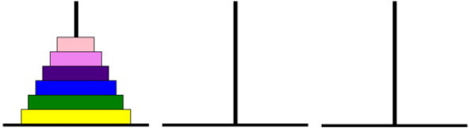
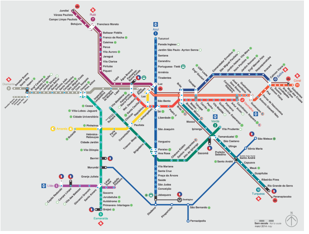

Pensamento computacional
Computacional Thinking¶
Seja bem-vindo à jornada do pensamento computacional!
Hoje, o pensamento computacional é visto não apenas como uma habilidade essencial para aqueles que trabalham em campos relacionados à tecnologia, mas também como uma habilidade valiosa para a resolução de problemas em diversas áreas. A capacidade analítica de compreender problemas e propor soluções sistêmicas é aplicável em muitas áreas, desde a ciência e engenharia até as artes e ciências sociais.
Vamos jogar!¶
O jogo¶
A Torre de Hanói é um dos mais famosos jogos de Matemática. Ele consiste de uma base contendo três pilares (hastes), em um dos quais está disposta uma torre formada por alguns discos colocados uns sobre os outros, em ordem crescente de diâmetro, de cima para baixo. O número de discos pode variar. Observe a disposição inicial de um jogo com seis discos.

Desafio¶
Transferir todos os discos de um pino para outro qualquer. Tente transferi-los de um pino para outro em apenas 31 movimentos, sendo que você poderá mover apenas um disco por vez.
Regras¶
Warning
Um disco maior nunca poderá ficar em cima de um disco menor.
Jogar¶
Desenvolva uma estratégia para conseguir solucionar com a menor quantidade de movimentos.
Se o jogo não abrir acesse o link: https://www.geogebra.org/m/s5hd5qum
Progress
Continuar...
O que é pensamento computacional?¶
O pensamento computacional é uma forma de abordar problemas e sistemas de uma maneira que um computador poderia entender. Não se trata apenas de programar, mas sim de uma mentalidade que utiliza conceitos fundamentais da ciência da computação para resolver problemas, projetar sistemas e compreender o comportamento humano. Então não relacione pensamento computacional a computador, não necessariamente são utilizados computadores nesse processo. A ideia central é trazer a forma de raciocínio que as máquinas aplicam nos problemas.
Warning
Pensamento computacional não depende computadores e nem de linguagem computacional, logo não se resume a programação ou software ou internet...
Quais são os 4 pilares do pensamento computacional?¶
Para que o pensamento computacional seja aplicado, vamos conhecer os seus 4 pilares.
1. Decomposição¶
- Definição: Dividir um problema complexo em partes menores e mais gerenciáveis.
- Por que é importante?: Ao decompor um problema, podemos focar em solucionar cada parte individualmente, tornando a tarefa global mais simples.
- Exemplo: Ao criar um website, podemos decompor o projeto em partes como design, funcionalidades, conteúdo e otimização para dispositivos móveis.

2. Abstração¶
- Definição: Focar nas informações essenciais de um problema, ignorando detalhes desnecessários.
- Por que é importante?: Ajuda a simplificar problemas complexos, permitindo que nos concentremos nos aspectos mais cruciais.
- Exemplo: Ao desenvolver um aplicativo de transporte, não precisamos saber como um carro funciona internamente, mas sim como ele se move de um ponto a outro.

3. Reconhecimento de Padrões¶
- Definição: Identificar semelhanças ou tendências em problemas ou conjuntos de dados.
- Por que é importante?: Reconhecer padrões nos permite fazer previsões e identificar soluções mais rapidamente.
- Exemplo: Ao analisar dados de vendas, podemos identificar em quais meses as vendas aumentam e planejar estratégias de marketing com base nisso.

4. Algoritmo¶
- Definição: Criar uma série de instruções passo a passo para resolver um problema ou realizar uma tarefa.
- Por que é importante?: Os algoritmos garantem que uma tarefa seja realizada de forma eficiente e correta.
- Exemplo: Ao preparar uma receita, seguimos um algoritmo para garantir que o prato seja feito corretamente.

Como desenvolver o Pensamento Computacional?¶
Desenvolver o pensamento computacional requer prática e imersão. Durante este curso, usaremos Python, uma linguagem de programação poderosa e versátil, como nossa ferramenta principal. Através de exercícios práticos, projetos e discussões em sala de aula, você será desafiado a aplicar os conceitos de pensamento computacional para resolver problemas reais. Encorajamos a colaboração, a experimentação e, acima de tudo, a curiosidade.
Progress
Continuar...
Desafios¶
Question
Assinale o que você entende sobre Decomposição:
- Analisar o problema e aumentar partes
- Conhecer o problema e dividir em partes menores
- Apagar partes de um programa
- Testar um Algoritmos
Answer
Dividir para conquistar.
Question
Assinale o que você entende sobre Reconhecimento de Padrões
- Identificar situações que se repetem dentro do problema ou entre problemas
- Reconhecer um erro em um programa
- Identificar o que há de diferente em um problema
- Reconhecer o final de um problema
Answer
.
Question
Assinale o que você entende sobre Abstração
- É pensar sobre o que vem antes do problema
- Escolher o que é o mais importante para resolver um problema
- Escolher o que é o menos destacado no problema
- É pensar sobre como deveria ser o problema
Answer
.
Question
Assinale o que você entende sobre Algoritmo
- Organizar um passo a passo que não deve ser testado na solução do problema
- Organizar os passos para a solução de um problema e testar
- Listar as ações que o problema não apresentou
- Organizar a escrita do problema
Answer
.
Question
Podemos relacionar o mapa do metro de SP com qual pilar do pensamento computacional? 
- Abstração
- Reconhecimento de Padrões
- Decomposição
- Algoritmo
Answer
O mapa do metrô como exemplo de abstração do mundo real
Progress
Continuar...
Representação de algoritimos¶
Tip
Um algoritmo é, de fato, uma sequência definida de passos ou instruções para resolver um problema ou realizar uma tarefa. Ele serve como um "plano" ou "receita" para uma solução. Um algoritmo não é, por si só, um programa de computador. No entanto, um programa de computador pode ser desenvolvido com base em um ou mais algoritmos. Podemos representar algoritmos por meio de pseudocódigos ou fluxogramas.
Pseudocódigo¶
É uma descrição de alto nível de um algoritmo que usa a estrutura de um programa de computador, mas pode ser lido por humanos. Ele não é escrito em uma linguagem de programação específica, mas sim em uma forma que pode ser facilmente convertida em código real.
Algoritmo CalcularMedia
// Entrada de dados
Ler num1
Ler num2
Ler num3
// Cálculo da média
media <- (num1 + num2 + num3) / 3
// Saída de dados
Escrever "A média é: ", media
FimAlgoritmo
Fluxograma¶
É uma representação gráfica de um algoritmo. Usa símbolos padrão (como retângulos, losangos e ovais) conectados por setas para representar os passos e o fluxo de um algoritmo.

Tip
O objetivo de desenvolvidores de sistemas e profissionais de tecnologia é encontrar algoritimos mais eficientes para resolução do problema.
Question
Assinale a definição correta de um algoritmo:
- Uma linguagem de programação específica.
- Uma sequência definida de passos ou instruções para resolver um problema ou realizar uma tarefa.
- Um programa de computador.
- Uma representação gráfica de um programa.
Answer
Um algoritmo é uma sequência definida de passos ou instruções para resolver um problema ou realizar uma tarefa.
Question
O que é pseudocódigo?
- Um código escrito em uma linguagem de programação específica.
- Uma descrição de alto nível de um algoritmo que pode ser lido por humanos.
- Um tipo de fluxograma.
- Um programa de computador.
Answer
Pseudocódigo é uma descrição de alto nível de um algoritmo que pode ser lido por humanos.
Question
Qual é o objetivo dos desenvolvedores de sistemas e profissionais de tecnologia ao trabalhar com algoritmos?
- Criar fluxogramas.
- Escrever pseudocódigos.
- Encontrar algoritmos mais eficientes para a resolução do problema.
- Aumentar a complexidade do problema.
Answer
O objetivo é encontrar algoritmos mais eficientes para a resolução do problema.
Question
Imagine que você foi contratado para desenvolver um algoritmo que calcule o desconto em uma compra. O desconto é de 10% se o valor da compra for maior que R$100. Dentre os pseudocódigos abaixo, qual deles implementa corretamente essa lógica?
- DescontoA
Algoritmo DescontoA Ler valorCompra Se valorCompra > 100 Então desconto <- valorCompra * 0.10 Senão desconto <- 0 FimSe Escrever "Desconto: ", desconto FimAlgoritmo - DescontoB
Algoritmo DescontoB Ler valorCompra Se valorCompra < 100 Então desconto <- valorCompra * 0.10 Senão desconto <- 0 FimSe Escrever "Desconto: ", desconto FimAlgoritmo - DescontoC
Algoritmo DescontoC Ler valorCompra desconto <- valorCompra * 0.10 Escrever "Desconto: ", desconto FimAlgoritmo - DescontoD
Algoritmo DescontoD Ler valorCompra Se valorCompra > 100 Então desconto <- 0 Senão desconto <- valorCompra * 0.10 FimSe Escrever "Desconto: ", desconto FimAlgoritmo
Answer
O pseudocódigo DescontoA implementa corretamente a lógica de dar 10% de desconto se o valor da compra for maior que R$100.
Question
Você foi solicitado a criar um algoritmo para calcular juros simples. O juro simples é calculado pela fórmula J = P * i * n, onde P é o Capital, i é a taxa de juro e n é o número de períodos. Qual dos pseudocódigos abaixo implementa corretamente essa lógica?
- JuroSimplesA
Algoritmo JuroSimplesA Ler P, i, n J <- P * i * n Escrever "Juros: ", J FimAlgoritmo - JuroSimplesB
Algoritmo JuroSimplesB Ler P, i, n J <- P + i + n Escrever "Juros: ", J FimAlgoritmo - JuroSimplesC
Algoritmo JuroSimplesC Ler P, i, n J <- P * i / n Escrever "Juros: ", J FimAlgoritmo - JuroSimplesD
Algoritmo JuroSimplesD Ler P, i J <- P * i Escrever "Juros: ", J FimAlgoritmo
Answer
O pseudocódigo JuroSimplesA implementa corretamente a fórmula para calcular juros simples.
Question
Seu objetivo é desenvolver um algoritmo que verifique se um número é par. Qual dos pseudocódigos abaixo implementa corretamente essa verificação?
- ParOuImparA
Algoritmo ParOuImparA Ler num Se num / 2 = 1 Então Escrever "Par" Senão Escrever "Ímpar" FimSe FimAlgoritmo - ParOuImparB
Algoritmo ParOuImparB Ler num Se num MOD 2 = 0 Então Escrever "Par" Senão Escrever "Ímpar" FimSe FimAlgoritmo - ParOuImparC
Algoritmo ParOuImparC Ler num Se num MOD 2 = 1 Então Escrever "Par" Senão Escrever "Ímpar" FimSe FimAlgoritmo - ParOuImparD
Algoritmo ParOuImparD Ler num Se num / 2 = 0 Então Escrever "Par" Senão Escrever "Ímpar" FimSe FimAlgoritmo
Answer
O pseudocódigo ParOuImparB verifica corretamente se um número é par ou ímpar.
Progress
Continuar...
O que é um computador?¶
O dicionario talvez defina o termo computador como um “dispositivo eletrônico que é capaz de receber informações (dados) de uma forma particular e de realizar uma sequência de operações [...] para produzir um resultado”. No entanto, a definição original do mesmo termo, em uso do século XVII, é ligeiramente diferente. Refere-se a alguém “que computa” ou uma “pessoa que realiza cálculos matemáticos” – da Wikipedia.
Quando usamos o termo computador, consideramos sempre a definição mais genérica: qualquer agente processador de informação (ou seja, uma máquina ou uma pessoa agindo mecanicamente se devidamente instruído) que pode fazer cálculos e produzir alguma saída a partir de informações de entrada.
 Eniac - um marco na computação.
Eniac - um marco na computação.
Tip
Para saber mais sobre a história da computação:
Como um computador computa?¶
O processo de computação envolve a execução de instruções específicas em uma sequência determinada. Estas instruções são fornecidas ao computador na forma de programas. Quando um programa é executado, ele passa por várias etapas:
- Entrada: O computador recebe dados, seja por meio de um teclado, mouse, sensores ou outros dispositivos.
- Processamento: A CPU (Unidade Central de Processamento) processa os dados, executando operações aritméticas e lógicas.
- Armazenamento: Os dados processados podem ser armazenados na memória do computador ou em dispositivos de armazenamento, como discos rígidos.
- Saída: O computador exibe ou transmite os resultados do processamento, seja em um monitor, impressora ou através de sinais para outros dispositivos.
Linguagens naturais vs linguagens de programação¶
Linguagens naturais são as línguas que as pessoas falam, como inglês, português ou mandarim. Elas evoluíram naturalmente ao longo do tempo e são ricas em nuances, ambiguidades e contextos culturais.
Linguagens de programação, pelo contrário, são línguas de origem formal. Obrigam a regras sintáticas específicas. Tais regras evitam possíveis afirmações ambíguas, principalmente por restringir a expressividade da linguagem. Portanto, todas as sentenças em tal linguagem estão transmitindo apenas um significado possível.
Em particular, podemos distinguir três macroconjuntos de linguagens de programação:
linguagem de máquinaé um conjunto de instruções que podem ser executadas diretamente pela unidade central de processamento (CPU) de um computador eletrônico. Por exemplo, o código a seguir é o código executável binário (ou seja, uma sequência de 0 e 1) definindo uma função (ou seja, um tipo de ferramenta que recebe algumas entradas e produz algumas saídas) para calcular o n-ésimo número de Fibonacci:
100010110101010000100100000010001000001111111010000000000111011
100000110101110000000000000000000000000000000000011000011100000
111111101000000010011101110000011010111000000000010000000000000
000000000001100001101010011101110110000000100000000000000000000
000010111001000000010000000000000000000000001000110100000100000
110011000001111111010000000110111011000000111100010111101100110
001001110000010100101011101011111100010101101111000011
linguagem de baixo nivelsão linguagens que fornecem um nível de abstração acima da linguagem de máquina. Desta forma, permite escrever programas de uma forma mais inteligível para os humanos. A linguagem mais popular desse tipo é Assembly (ASM). Mesmo que introduzindo símbolos humanamente reconhecíveis, uma linha de código assembly normalmente representa uma instrução de máquina em linguagem de máquina. Por exemplo, a mesma função para calcular o n-ésimo número de Fibonacci é definida em Assembly da seguinte forma:
fib:
mov edx, [esp+8]
cmp edx, 0
ja @f
mov eax, 0
ret
@@:
cmp edx, 2
ja @f
mov eax, 1
ret
@@:
push ebx
mov ebx, 1
mov ecx, 1
@@:
lea eax, [ebx+ecx]
cmp edx, 3
jbe @f
mov ebx, ecx
mov ecx, eax
dec edx
jmp @b
@@:
pop ebx
ret
linguagem de alto nivelsão caracterizados por uma forte abstração da especificabilidade da linguagem de máquina. Em particular, pode usar palavras de linguagem natural para construções específicas para serem fáceis de usar e entender por humanos. De um modo geral, quanto mais abstração das linguagens de programação de baixo nível for fornecida, mais compreensível será a linguagem. Por exemplo, no exemplo a seguir, mostramos como usar a linguagem de programação C para implementar a mesma função de antes:
unsigned int fib(unsigned int n) {
if (n <= 0)
return 0;
else if (n <= 2)
return 1;
else {
unsigned int a,b,c;
a = 1;
b = 1;
while (1) {
c = a + b;
if (n <= 3) return c;
a = b;
b = c;
n--;
}
}
}
Exercise
Quais são linguagens de alto nível? existe mais de uma alternativa correta.
- Java.
- JavaScript.
- Ruby.
- Python.
- C#.
- PHP.
- Assembly.
- Swift.
- Kotlin.
- Go.
- Perl.
- Lua.
- R.
- TypeScript.
- Rust.
- Scala.
- Groovy.
- MATLAB.
- C++.
- Elixir.
- C.
- VHDL.
Answer
As linguagens de alto nível são: Java, JavaScript, Ruby, Python, C#, PHP, Swift, Kotlin, Go, Perl, Lua, R, TypeScript, Rust, Scala, Groovy e MATLAB. Assembly e VHDL são linguagens de baixo nível.